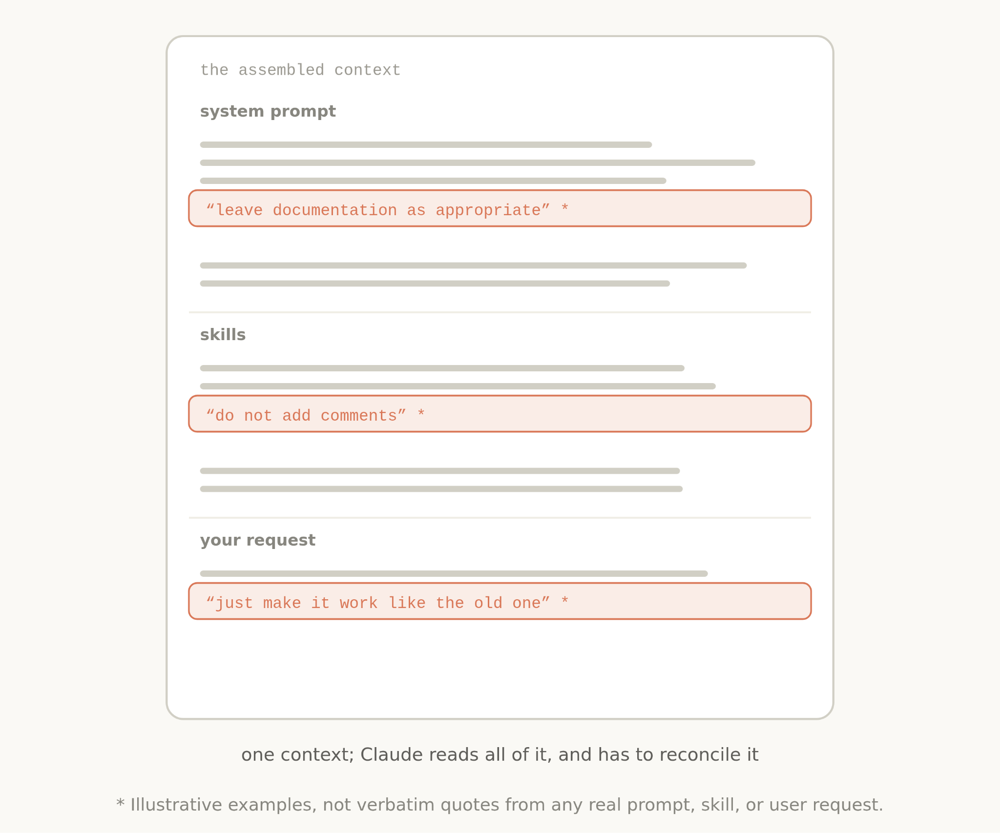
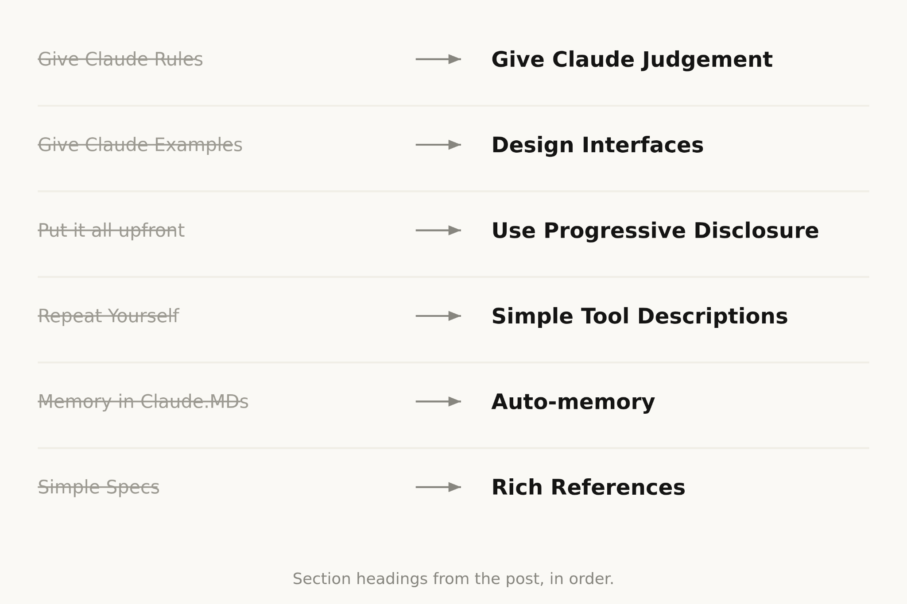
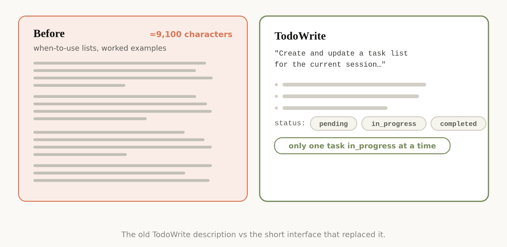
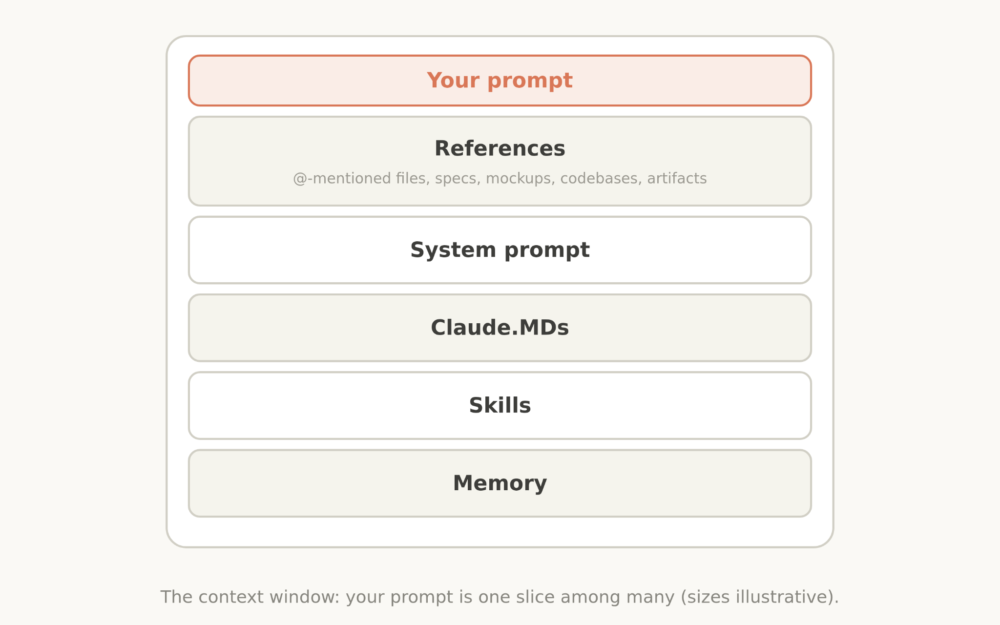

고급 모델에서는 Claude Code 시스템 프롬프트의 80% 이상을 걷어냈다. 우리가 얻은 교훈을 Claude Code에서, 그리고 직접 만드는 에이전트에서 여러분의 컨텍스트 엔지니어링에 적용하는 방법을 소개한다.
이전 글에서 최신 세대 Claude 5 모델에 프롬프트를 주는 방법과, 모델과 반복적으로 작업하며 무엇을 만들고 싶은지 찾아가는 방법을 다룬 적이 있다.
하지만 Claude에게 메시지를 보낼 때 프롬프트는 Claude가 받는 컨텍스트의 작은 일부일 뿐이다. 컨텍스트의 상당 부분은 시스템 프롬프트, Skills, CLAUDE.md 파일, 메모리 등 여러 출처에서 조립된다. 우리는 이것을 컨텍스트 엔지니어링(context engineering)이라 부르며, Claude Code를 쓰거나 직접 에이전트를 만들 때 얻는 결과에 큰 영향을 준다.
프롬프트와 달리 컨텍스트는 여러 요청에 걸쳐 두루 쓰이기 때문에 그만큼 구체적일 수 없다. 사용자의 프롬프트가 무엇일지 모르는 상황에서, Claude를 위한 이런 범용 프롬프트와 지침은 어떻게 만들어야 할까?
Claude 자체의 능력이 계속 발전하기 때문에 이 일은 의외로 어렵다. 가장 최근에는 최신 세대 Claude 모델에 프롬프트를 주는 방식에서 큰 도약이 있었다. Claude Opus 5와 Claude Fable 5 같은 모델에 대해서는 Claude Code의 시스템 프롬프트를 80% 넘게 걷어냈는데, 코딩 평가에서 측정 가능한 손실은 없었다.
이 새로운 부류의 모델에 프롬프트를 주는 방법에 대해 우리가 배운 것, 그리고 이를 활용해 여러분의 컨텍스트 엔지니어링을 업데이트하는 방법을 정리했다. 이 모범 사례는 claude doctor에 담아 두었다. Claude Code에서 /doctor 명령을 쓰면 스킬과 CLAUDE.md 파일의 규모를 알맞게 조정할 수 있다.
전반적으로 보면, 우리는 시스템 프롬프트에서도, CLAUDE.md 파일과 스킬에서도 Claude Code를 지나치게 제약하고 있었다.
예를 들어 사내에서 Claude Code를 사용한 트랜스크립트를 읽어 보면, 시스템 프롬프트·스킬·사용자 요청이 서로 부딪히면서 한 요청 안에 "적절하게 문서화를 남겨라"와 "주석을 추가하지 마라" 같은 상충하는 메시지가 여러 개 들어 있는 것이 보인다.

대체로 Claude는 사용자의 의도를 해석해 올바른 답에 도달할 수 있지만, 무엇을 할지 정하기 전에 이렇게 겹치고 상충하는 메시지들을 더 신중하게 따져 봐야 한다.
그리고 이런 제약이 한때는 최악의 상황을 피하는 데 필요했지만, 이제는 상당수를 지우고 모델이 주변 맥락과 판단력을 대신 쓰게 해도 된다는 것을 알게 됐다.
게다가 Claude Code에는 이제 훨씬 많은 도구가 있다. 예전에 Claude는 메모리, 정보, 지침의 출처로 CLAUDE.md에 의존했다. 지금은 메모리, 아티팩트, 스킬이 있어서, Claude가 이를 활용해 세션 간에 컨텍스트를 불러오고 공유하는 새로운 방법을 만들어 낼 수 있다.
예전의 컨텍스트 엔지니어링 모범 사례 가운데 여러 가지가 이제는 근거 없는 통념(myth)이 됐다. 그 예는 다음과 같다.

Claude Code를 처음 내놓았을 때는 파일 삭제 같은 최악의 상황을 Claude가 확실히 피하도록 해야 했다. 그래서 늘 맞지는 않을 수도 있는 특히 강한 지침을 주곤 했다. 예를 들어 예전 시스템 프롬프트에는 이렇게 적혀 있었다.
코드에서는 기본적으로 주석을 쓰지 마라. 여러 문단짜리 docstring이나 여러 줄짜리 주석 블록은 절대 쓰지 말고, 최대 짧은 한 줄로 하라. 사용자가 요청하지 않는 한 계획·결정·분석 문서를 만들지 마라. 중간 파일이 아니라 대화 맥락을 바탕으로 작업하라.
하지만 일부 프롬프트에서는 이 지침이 틀렸다. 문서화의 경우 사용자에게 나름의 선호가 있을 수 있고, 아주 복잡한 코드의 특정 부분에는 여러 줄짜리 주석 블록이 필요할 수도 있다.
그래도 예전 모델은 이런 가드레일이 없으면 Claude가 쓴 주석이 틀리는 경우가 많았기에, 우리는 이 트레이드오프를 받아들여야 했다. 하지만 새 모델은 판단력이 더 좋아서 명시적인 규칙 없이도 이런 결정을 잘 처리한다.
새 시스템 프롬프트에서는 이렇게 말한다. 주변 코드처럼 읽히는 코드를 써라. 주석 밀도, 이름 짓기, 관용구를 주변 코드에 맞춰라.
도구 사용의 제1원칙은 Claude에게 사용 예시를 주는 것이었다. 그런데 최신 모델에서는 예시를 주면 오히려 모델이 특정 탐색 범위에 갇힌다는 것을 발견했다.

예시를 쓰는 대신 도구, 스크립트, 파일의 설계를 더 고민하라. Claude가 어떤 매개변수를 갖고 있고, 그것을 어떻게 더 표현력 있게 만들 수 있을까?
예를 들어 Todo 도구의 경우, 상태(status)를 pending, in_progress, completed 중 하나인 열거형(enumeration)으로 나열하기만 해도 Claude에게 사용법에 대한 힌트가 된다. 그리고 항목 하나만 in_progress로 유지하라는 지시가 우리가 원하는 동작을 정의하는 데 도움이 된다.
Claude Code는 코딩에 집중했기 때문에, 시스템 프롬프트에는 코드 리뷰와 검증을 하는 방법에 대한 자세한 정보가 들어 있었다. 늘 필요한 정보는 아니었지만, 필요할 때는 결정적으로 중요한 정보였다.
그 뒤로 Claude Code는 점진적 공개(progressive disclosure), 즉 알맞은 컨텍스트를 알맞은 때에 불러오는 일에 매우 능숙해졌다. 예를 들어 우리는 검증과 코드 리뷰를 Claude Code가 선택적으로 호출할 수 있는 별도의 스킬로 옮겼다.
하지만 점진적 공개는 스킬에만 쓰는 것이 아니다. 도구에도 쓴다. 일부 도구는 '지연 로딩(deferred loading)' 방식인데, 에이전트가 그 도구를 쓰기 전에 ToolSearch로 전체 정의를 검색해야 한다는 뜻이다. 덕분에 (Task 도구 같은) 더 많은 도구를 두면서도, 필요해지기 전까지는 컨텍스트를 차지하지 않게 할 수 있다.
여러분의 CLAUDE.md와 Skill.md 파일에도 똑같이 적용할 수 있다. 흔한 통념 중 하나는, 그러지 않으면 Claude가 찾지 못할 테니 이 파일들을 마주칠 수도 있는 모든 알려진 관행을 모아 두는 중앙 저장소로 만들어야 한다는 것이다. 그 대신 알맞은 때에 불러올 수 있는 파일 트리를 두는 방안을 고려하라.
예전 Claude 모델은 때때로 지시를 반복해 줘야 했고, 컨텍스트 윈도의 앞부분보다 끝부분에 있는 지시를 더 잘 따르는 경향이 있었다. 그래서 시스템 프롬프트 본문에 도구에 대한 언급이 있으면서 도구 설명에도 지시가 들어가 있는 경우가 있었다.
우리는 이런 반복 예시를 지우고, 도구 사용법에 대한 지시를 시스템 프롬프트가 아닌 도구 설명에 넣어도 된다는 것을 알게 됐다.
예전에는 # 단축키로 CLAUDE.md에 자동으로 기록하는 방식으로 Claude의 메모리에 내용을 저장하라고 권했다. 이제는 Claude가 작업과 여러분에게 관련 있는 메모리를 자동으로 저장한다.
Plan 모드에서 Claude Code는 계획을 담은 마크다운 파일에 크게 의존해 왔다. 이런 파일을 계획으로 저장해 두면 Claude가 필요할 때 참고하기 좋았다. 비슷한 모범 사례로, 긴 프로젝트를 진행하는 동안 Claude가 참고할 스펙을 코드베이스에 저장해 두는 방법도 있었다.
하지만 Claude가 점점 더 복잡한 레퍼런스를 다룰 수 있다는 것을 알게 됐다. 단순한 마크다운 파일 대신, 새 아티팩트 기능으로 만든 HTML 아티팩트를 Claude가 참고할 수 있다.
코드 형태의 레퍼런스를 Claude에게 줄 수도 있다. 스펙은 자세한 테스트 스위트일 수도 있고, Claude가 포팅할 다른 코드베이스의 함수일 수도 있다.
루브릭(rubric)도 레퍼런스의 한 형태다. 루브릭이 있으면 Claude는 동적 워크플로우(dynamic workflows)를 활용해 그 루브릭을 가진 검증 에이전트들을 띄워서, 특정 분야에서의 여러분의 취향(예: 좋은 API 설계란 어떤 모습인가)을 검증해 볼 수 있다.
이 모든 것을 종합하면, 컨텍스트를 조립할 때 어떤 모습이 될까?

시스템 프롬프트는 제품 맥락과 강하게 묶여 있다. Claude가 어떤 제품 안에서 동작하고 있으며 무엇을 하고 있는지 알려 준다. Claude Code에서는 아마 이것을 수정할 일이 없겠지만, 직접 에이전트 하네스를 만들고 있다면 바로 여기에 시간을 많이 들여야 한다.
CLAUDE.md는 가볍게 유지하고 저장소가 무엇을 위한 것인지 간단히 설명하되, 토큰의 대부분은 코드베이스 안의 함정(gotcha)에 써라. 예를 들어 타입을 거대한 파일 하나에만 두고 다른 곳에는 두지 않도록 코드를 구성했을 수 있다. Claude가 파일 시스템이나 저장소를 보면 알 수 있는 '뻔한' 사항은 적지 마라.
점진적 공개를 적극적으로 활용하라. 예를 들어 작업을 검증하는 고유한 방법이 여러 가지 있다면, 검증 스킬을 만들고 CLAUDE.md에서 그것을 참조하라.
스킬은 Claude가 필요할 때 정보를 찾을 수 있게 해 주는 가벼운 가이드라고 생각하라. 매우 중요한 영역이 아니라면 지나치게 제약하지 마라.
긴 스킬에는 점진적 공개를 최대한 활용하라. 여러 파일로 나누고 쪼개 두어라.
스킬은 여러분, 여러분의 팀, 또는 제품에 고유한 특정 견해, 지식, 모범 사례를 담을 때 가장 좋다.
파일을 @로 멘션하면 레퍼런스로 포함할 수 있다. 레퍼런스를 통해 Claude는 현재 계획에 대한 깊이 있는 정보를 참고할 수 있다.
스펙 파일, 목업, 심지어 코드베이스 전체가 레퍼런스가 될 수 있다. 일반적으로는 코드로 된 파일을 선호하는 편이 좋다. Claude가 아주 잘 아는 언어로 명확하고 충실도 높은 지시를 주기 때문이다. 예를 들어 디자인의 HTML 목업은 대체로 디자인에 대한 설명이나 스크린샷보다 더 좋은 결과를 낸다.
시스템 프롬프트, 스킬, CLAUDE.md 파일 전반에서 여러분도 우리처럼 단순화해야 할 수 있다. 우리는 이를 자동으로 도와주는 claude doctor라는 새 명령도 내놓았다. 더 고급 모델에 프롬프트를 주는 방법을 자세히 알고 싶다면 Fable 필드 가이드를 참고하라.
이 글은 Anthropic의 Member of Technical Staff인 Thariq Shihipar가 썼다.